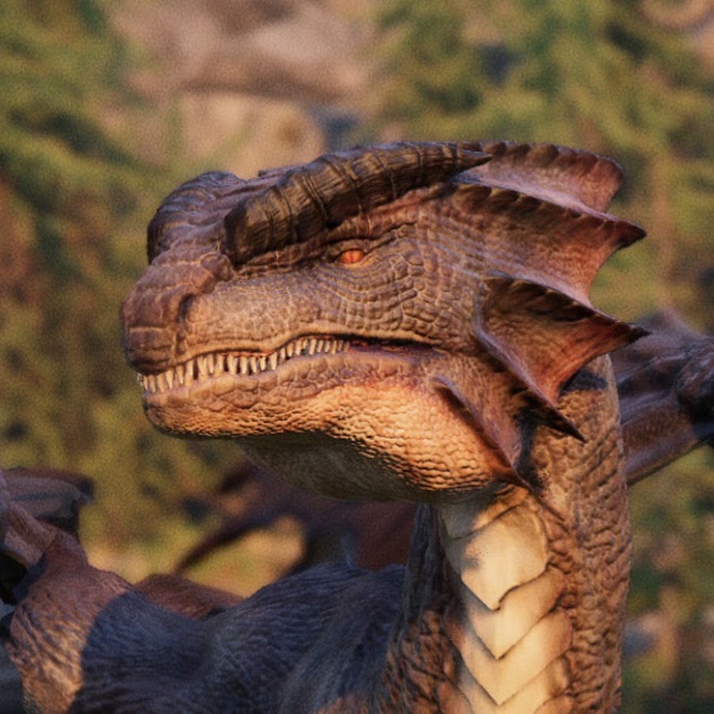
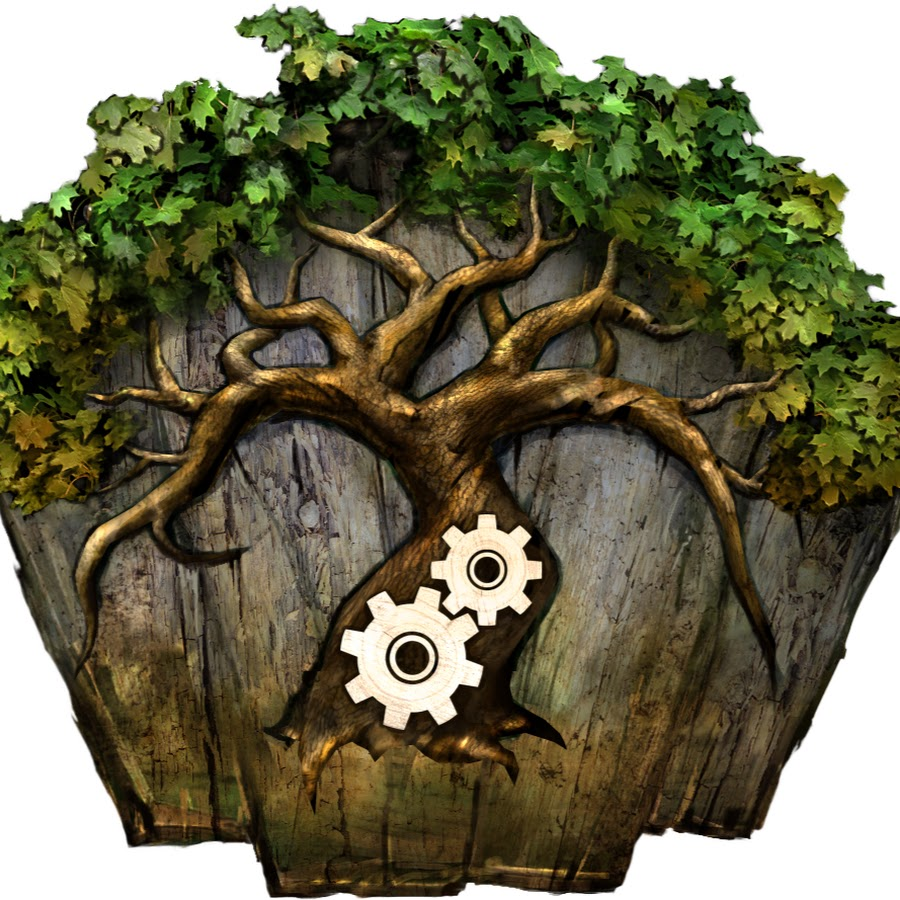
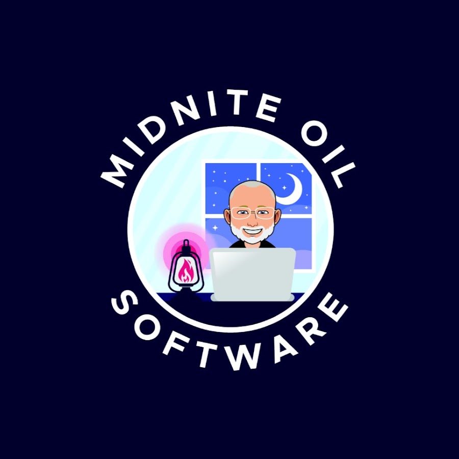
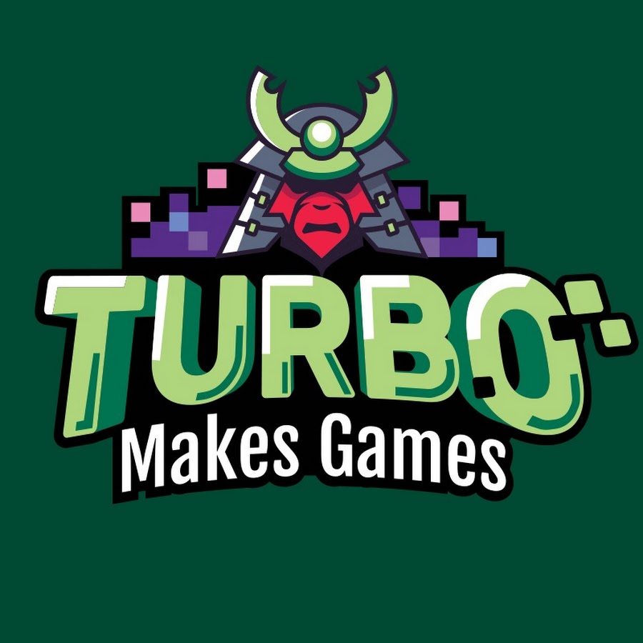

The regular panel

AndrewInfinity PBR • Magic Pig GamesAsset StoreSite- DavidWarped Imagination

PawelNatureManufactureAsset Store- Jason StoreyYouTube

Greg BradburnMidnite Oil Software
JohnnyTurbo Makes Games- Salim Grantchannel not on record
- Yorai Omerchannel not on record
- Dylan Watkinschannel not on record
Engines
Platforms
Workflow
AI
Runtime
Architecture
Design
Community
Business
Content
"Who's on" reads the name tags shown on screen during the stream, so it finds the table as it actually sat that night rather than whoever the title happened to credit. 103 of the 147 episodes carry readable tags; the rest are filtered by their title credits alone.
Sponsor the show
The audience is working game developers: the people who choose the engine, buy the tooling and pick the asset store bundle. Episodes run long and get watched long, and the back catalogue keeps earning views years after the stream ends.
- Unity127 eps · 724,236 views
- Multiplayer & netcode41 eps · 234,441 views
- Architecture & patterns37 eps · 232,026 views
- VR & AR46 eps · 231,065 views
- Unreal Engine32 eps · 228,509 views
- Careers & hiring29 eps · 215,293 views
- Animation30 eps · 151,824 views
- Performance & optimisation26 eps · 143,467 views
- Art pipeline27 eps · 128,698 views
- Audio25 eps · 126,474 views
- Rendering27 eps · 125,242 views
- DOTS & ECS23 eps · 122,395 views
Every figure on this page is public YouTube data for the 147 episodes listed, counted on 2026-09-09. The channel's non-episode uploads are not counted here, so these are the show's own numbers rather than the channel's. Listener and download figures are not shown because they are not public — ask and we will send them.
Talk to us: jasonweimann@gmail.com